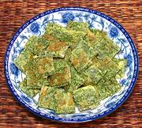

|
Acacia Leaf OmeletThailand - Kai Jeaw Cha-om | ||||
| Serves: Effort: Sched: DoAhead: |
2 side ** 20 min Yes |
In Thailand and Burma, this omelet is very popular as a side dish and as an addition to hot & sour soups. Alas, Acacia Shoots are problematic (see below) so we suggest using a substitute. | |||
| Senegalia pannata (Cha Om) plants are highly illegal in Australia, New Zealand, California and Hawaii. Frozen packages of leaf shoots are legal, but may not be easy to find in North America, so we suggest Dandelion leaves as a substitute. Some may not appreciate the rubber cement smell and taste of real Cha Om anyway. | |||||
|
|
4 1 1/3 1/2 |
lrg oz t T |
Eggs Cha-Om (1) (or subst) Salt Oil |
Prep- (10 min)
Run- (10 min)
|